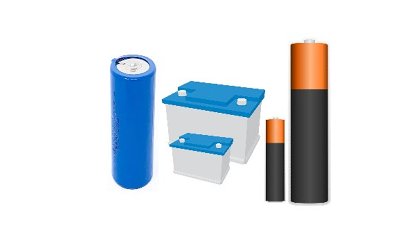

البطاريات Batteries :
تحتاج الأجهزة الكهربائيّة إلى مصدرٍ للطاقة، وتُعدّ البطّاريات هي أحد تلك المصادر المهمّة، وهي عبارة عن: “مُخزنات للطاقة”، ويوجد منها نوعان، الأوّل ما هو قابل للشحن، والثاني غير قابل للشحن، وجميعها متعدّدة القدرة الفولتية، ومن أمثلتها بطاريات الليثيوم والكربون، والزنك، والنيكل كادميوم، والرصاص، وغيره.
وظيفتها:
تكمن وظيفة البطّاريات في مدّ الأجهزة الكهربائيّة التي يمكن أن تعمل بالبطّاريات، بالطاقة الكهربائيّة اللازمة لتشغيلها.
